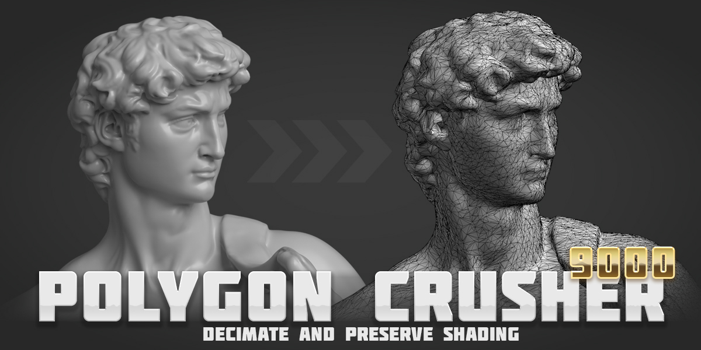

What is Polygon Crusher 9000?
Polygon Crusher 9000 is a Blender addon for fast, high-quality mesh decimation. It crushes multi-million-triangle meshes down to whatever budget your scene needs while preserving the qualities that matter — surface shading, silhouette, and UV mapping.
Unlike Blender's built-in Decimate, the simplifier runs as a worker subprocess, so the UI stays responsive and large meshes finish in seconds. It's modifier-aware, parallelizes across CPU cores for multi-object selections, and includes a Keep UVs option that keeps the original UV map intact — handy for textured photogrammetry scans where re-baking would otherwise be required.
Built for: 3D scans, sculpts, remeshed highpoly models, LOD generation.
Get Started · Settings Reference
Features
- Smart Decimation — high-quality mesh reduction that preserves shape and silhouette at any reduction level.
- Normal Preservation — transfers original surface normals onto the result, so smooth shading survives even aggressive crushing.
- Modifier-Aware — crushes the evaluated mesh; boolean, subdivision, and the rest of the modifier stack are baked in automatically. Originals stay untouched.
- Tunable Aggressiveness — dial how hard the simplifier pushes. Lower values keep fine features (eyes, hair, creases); higher values converge faster on lower-detail meshes.
- Live Progress — Blender stays responsive during long crushes — heavy work runs on a worker thread. Press ESC at any time to abort.
- Session Stats — per-object triangle counts and timing displayed after each crush, directly in the panel.
Requirements
| Blender | 4.2 or later (tested on 5.1) |
| OS | Windows, macOS, Linux |
Support
Questions or issues? Email henriquevlopes@gmail.com